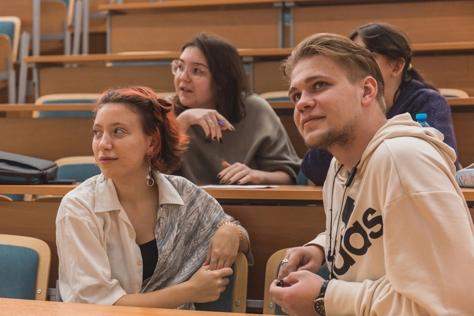

Наши контакты
Телефон: +7(987)654-32-10


Всем привет! В силу вступает новый 2024 год, а у нас для вас новая рубрика! #лмш_преподаватели
На связи ЛМ… не то. На связи я, Николай Вдовин. Так получилось, что мне выпала честь открывать эту рубрику, рассказать о себе в жизни и в Альтернативе.
— Я выпускник ЕФМЛ, студент 4 курса НИУ “МИЭТ”, кафедры Телекоммуникационных систем, направление “Инфокоммуникационные технологии, сети и устройства” и по совместительству преподаватель в Летней Многопрофильной Школе “Альтернатива”.
— В далеком 2020, очень сложном, как для одиннадцатиклассника, году нужно было выбрать что-то интересное, перспективное и удобное для поступления. Определиться с подходящей сферой оказалось несложно.
Телекоммуникационные системы освещают всю связь, которую вы только можете представить, что полностью удовлетворяет мои увлечения компьютерной техникой, музыкой и космосом. Кафедра ТКС представлена в нескольких университетах Москвы, точно помню МИРЭА, МАИ и, собственно, МИЭТ. Позже я узнал, что это направление наиболее развито именно в МАИ, но сайт МИЭТа покорил меня своим удобством для подачи документов.
— Электромагнитные волны! Связь между элементами компьютера, компьютером и периферией, компьютерами в общем, электрогитарой и усилителем, наземной станцией и любимым всей ЛМШой Вояджером-1 имеют плюс минус одинаковую природу. Тут меня конечно должны начать пинать все мои преподаватели, но я выразился совсем сжато.
— Так сложилось, что в Альтернативе я чуть ли не главный фанат физики, но сказать, что ЭМВ это весело не могу. Однако, стоит заметить, что инфокоммуникационные технологии объединяют в себе информатику и физику, а последние поколения связи все больше имеют под собой программную базу, нежели физическую.
— Да, автор курса “Ликбез по физике”, на нем мы за пару недель успеваем закрыть большую часть непонятных тем, но, в традициях ЛМШ, не по-школьному. В своем курсе я стараюсь доказать даже самым отъявленным гуманитариям, что физика – это не всегда душные задачи на поиск давления в 555 сообщающихся сосудах, скользящих по горке под углом к горизонту с начальной скоростью 10км/ч где-то на поверхности Марса. Знание физики на уровне фактов неплохо расширяет кругозор и даже поднимает настроение. Например, я, когда своим умом дошел до ответа на вопрос “Как летает вертолет?”, полдня ходил пританцовывая, а когда понял зачем им всем по два винта… радости не было предела. Но помимо физики я преподаю некоторые упрощенные предметы со своего направления в университете, в 23 смене рассказывал детям основы теории связи. Вы, кстати, знаете, почему сотовая связь так называется?
— В еще более далеком 2016 году меня настигла мысль поехать в летний лагерь. Никогда до этого не ездил, а тут девочки из класса постарше пришли в класс и начали рекламировать ЛМШ. Стало интересно. Сходил на собеседование и вот я здесь.
— Если вы про хобби, то все та же музыка, чтение, фильмы, иногда играю в пейнтбол, когда - то играл в футбол и бегал на лыжах. Если про учебу, то участвовал в нескольких проектах, как сольных так и командных. Удалось даже немного поучаствовать в разработке настоящего космического спутника в форм-факторе “Кубсат”, но, к сожалению, пришлось покинуть команду. Сейчас занимаюсь в командном проекте по разработке системы безопасности для сетей связи.
— Это форм-фактор искусственных спутников Земли. Вполне себе настоящий космический аппарат собирается из модулей в виде кубиков со стороной в 10см, наполняется необходимым оборудованием и запускается на орбиту. Стоит не так дорого как огромные спутники и позволяет проводить необходимые исследования. Я занимался разработкой системы связи “Космический аппарат – Земная станция”, в которой нужно было реализовать получение данных со спутника и управления им. Во время разработки получилось принять сигнал самодельной антенной с настоящего спутника и получить изображение нашей планеты!
— Развивайтесь в интересных вам областях. Для этого, конечно, нужно сперва понять, что вам интересно. Это, на самом деле, совсем не просто, но очень важно. А дальше вы будете находить отголоски своих интересов в самых неожиданных местах, что, поверьте, придает много мотивации.
Телефон: +7(987)654-32-10